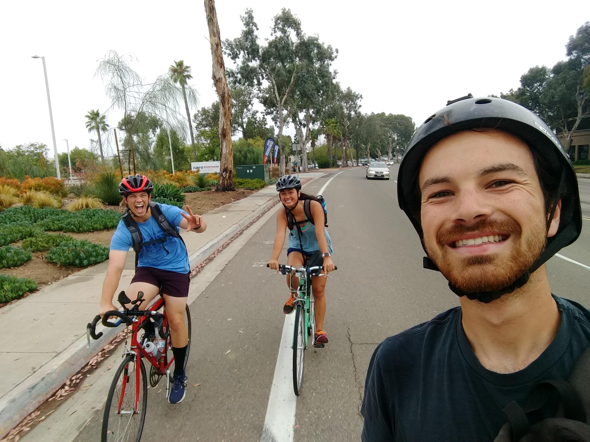

During the summer of 2019, I worked at Solar Turbines as a Software Engineering Intern. My summer project was to rebuild an internal software tool.
Skills utilized at Solar Turbines include:
This isn't work related, but I do want to say San Diego was a wonderful place to spend a summer! I spent my time surfing, playing beach volleyball with interns (and ultimately tearing my rotator cuff), riding my bike (I did 600+ miles in June; thanks Strava!), or getting food/boba with the other interns.
Below is a picture I took while riding to work with two interns. A great way to stay fit, be green, and have fun!
